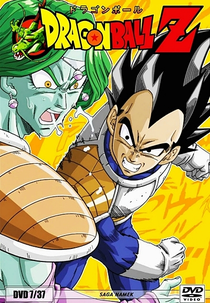
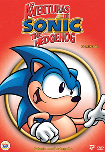
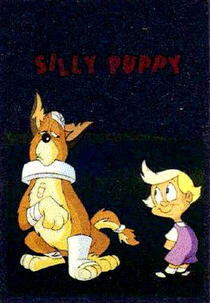
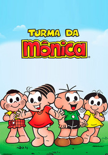
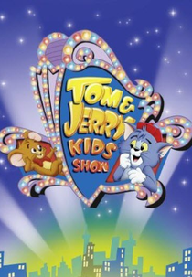
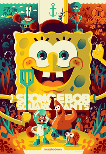
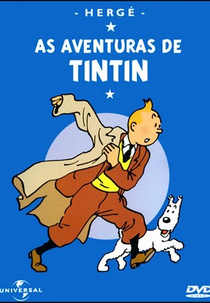

Na década de 1990, desenhos animados icônicos como "Cavaleiros do Zodíaco", "Dragon Ball Z" e "Tiny Toon" encantaram a audiência, definindo a era com narrativas envolventes e personagens memoráveis.

Dragon Ball Z, parte da franquia Dragon Ball criada por Akira Toriyama, é uma aclamada série de anime e manga que continua a saga de Son Goku e seus amigos na defesa da Terra contra ameaças cósmicas. Reconhecida por suas épicas batalhas, personagens cativantes e temas de amizade e superação, a série se tornou um ícone global da cultura pop. Com transformações impressionantes, como a lendária forma Super Saiyajin, e narrativa envolvente, Dragon Ball Z estabeleceu um padrão elevado no gênero de anime de ação, influenciando gerações de fãs ao redor do mundo.

As aventuras de Sonic the Hedgehog trazem à vida um universo vibrante e repleto de velocidade. Criado pela SEGA, Sonic é um ouriço azul com uma habilidade extraordinária para correr a velocidades incríveis. A série, que começou nos videogames, expandiu-se para desenhos animados e quadrinhos, acompanhando Sonic em sua missão para impedir os planos nefastos do vilão Dr. Robotnik. Com seus amigos leais, como Tails e Knuckles, Sonic enfrenta desafios emocionantes, coletando anéis dourados e explorando mundos cheios de loops e obstáculos. Além da busca constante pela justiça, as histórias de Sonic capturam a essência da aventura, amizade e ação em alta velocidade, tornando-o um ícone duradouro no mundo dos jogos e entretenimento.

No desenho "Animaniacs", Botões é incumbido de cuidar de Mindy enquanto a mãe dela está ausente. Mesmo diante dos esforços incansáveis de Botões para garantir a segurança da garota, Mindy sempre encontra uma maneira de se aventurar, levando Botões a correr atrás dela para evitar possíveis perigos. No entanto, mesmo após enfrentar todos os obstáculos e punições imagináveis, Botões frequentemente se vê recebendo reprimendas da mãe de Mindy ao perceber que a filha retornou para casa com a roupa suja ou outras situações inusitadas. Essa dinâmica humorística entre Botões e Mindy adiciona uma pitada de caos e diversão ao enredo do desenho.

A Turma da Mônica, criada pelo cartunista brasileiro Mauricio de Sousa, é uma icônica série de quadrinhos que encanta gerações de leitores. Com personagens carismáticos, como Mônica, Cebolinha, Magali e Cascão, a turma vive divertidas e cativantes aventuras no Bairro do Limoeiro. As histórias, permeadas por valores de amizade, respeito e imaginação, exploram situações cotidianas e travessuras típicas da infância. A diversidade dos personagens e a capacidade de abordar temas relevantes de forma lúdica contribuem para o sucesso duradouro da Turma da Mônica, que transcende fronteiras culturais e continua a ser uma parte adorada da cultura brasileira.

"Tom e Jerry Kids Show" é uma adorável extensão da clássica rivalidade entre o gato Tom e o rato Jerry, que cativou gerações de espectadores. Nesta versão animada, os personagens ganham uma abordagem mais jovial e divertida, proporcionando risadas e aventuras para crianças de todas as idades. O show apresenta as perseguições hilárias e os esquemas elaborados de Tom para capturar Jerry, muitas vezes resultando em situações cômicas e imprevisíveis. Com seu humor atemporal e animação vibrante, "Tom e Jerry Kids Show" continua a encantar audiências ao trazer a icônica dupla para uma nova geração, preservando o charme clássico que tornou esses personagens tão queridos ao longo dos anos.

"Bob Esponja Calça Quadrada" é um desenho animado que transporta os espectadores para o animado e subaquático universo da Fenda do Biquíni. Com protagonismo do otimista e trabalhador Bob Esponja, o programa oferece uma mistura única de humor absurdo, personagens peculiares e situações hilárias. Ao lado de seus amigos, como Patrick Estrela e Sandy Bochechas, Bob Esponja enfrenta desafios no Crustáceo Cascarudo, proporcionando entretenimento cativante e mensagens positivas para fãs de todas as idades. A série, criada por Stephen Hillenburg, tornou-se um fenômeno cultural, deixando uma marca duradoura na animação e na cultura pop.

"As Aventuras de Tintin" traz à vida as empolgantes jornadas do jovem repórter Tintin, junto com seu fiel cachorro Milu. Baseado nas icônicas histórias em quadrinhos criadas por Hergé, o desenho animado mergulha os espectadores em mistérios intrigantes, viagens exóticas e personagens carismáticos. Tintin é conhecido por sua curiosidade insaciável e senso de justiça, enquanto se envolve em emocionantes investigações ao redor do mundo. Com uma combinação única de aventura, humor e elementos históricos, "As Aventuras de Tintin" continua a encantar audiências de todas as idades, oferecendo uma experiência atemporal e repleta de imaginação.